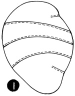
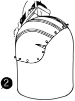
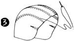
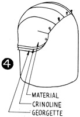
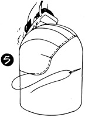
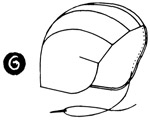

1952—How to Make Hats
by Ruby Carnahan
Helmet
HELMET
The following instructions apply to both helmet patterns. Any kind of material may be used. Wool, tweed, satin, taffeta and pique are most satisfactory.
Trace pattern and lay on fold of paper and cut double.
MATERIAL REQUIRED
- 3/8 yard of material for outside of helmet
- 3/8 yard of crinoline for foundation
- 3/8 yard of sized georgette for lining
CUTTING AND SEWING
Lay pattern on sized georgette and cut out. Mark and notch each piece of material like pattern. (Illus. 1) Match notches and baste pieces together, making a 1/4" seam. Stitch seam on machine. Place on correct headsize block, with seams on outside. Pull material down until smooth, and pin to block around the bottom.
(Illus. 2) Press thoroughly with a steam iron and let dry on block. To remove from block, slip a corset stay between block and material and carefully loosen material from block.
Cut, sew and block crinoline foundation in the same manner. Now cut out material for outside of helmet. Match notches and baste pieces together, making a 1/4" seam. Stitch seam on machine.
(Illus. 3) Turn each side of seam flat and baste down, then stitch down each side of seam. Block as above, being sure to smooth out all wrinkles, and let dry on block.
ASSEMBLING HELMET
Place georgette lining on block with seams on outside. Place crinoline foundation on block over georgette. Now put outside material on block, over the crinoline, with seams on the inside.
(Illus. 4) Pin through all three pieces to block and steam again.
Turn under, baste edges around bottom of helmet and steam. (Illus. 5)
When dry, remove from block and slip stitch edge around bottom of helmet (Illus. 6)